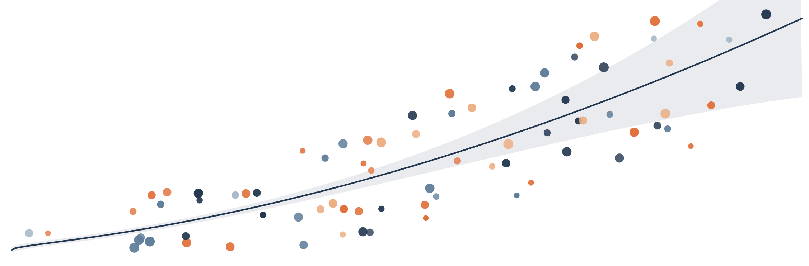
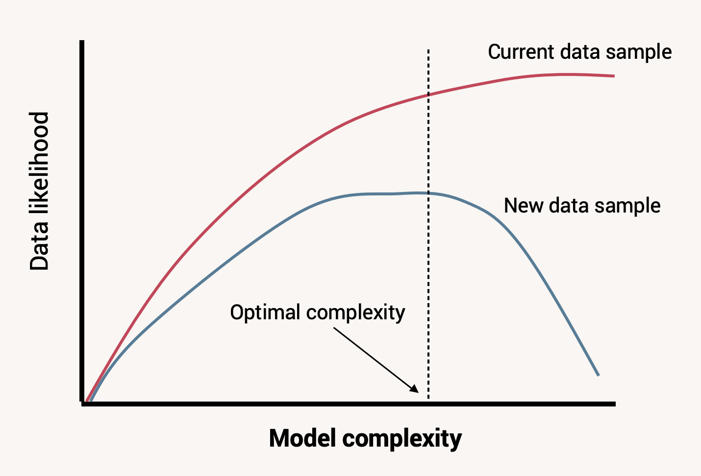

13 Evaluating Model Fit

We have spent a great deal of time in the last few chapters interpreting what the fitted values of our models mean for the proposed data generation process. If a model is a good fit for our data, these coefficients tell us what conclusions we can make about the nature of a data generation process that creates data like ours.
However, this all hinges on that “if” statement. Can this model plausibly generate data that looks like what we have, with its particular patterns of score possibilities and probabilities? If not, then we shouldn’t interpret the model coefficients too strongly - they say something about a data generation process, but they don’t describe the process that these data likely came from.
In order to check model fit, so far we have looked at plots of distributions to see how well simulated and real data resemble each other. But this process may have seemed vague and uncertain to you. Indeed, looking at simulated data is a first step but is usually not where we stop when assessing whether our model form is plausible. In this chapter, we will cover more formal ways to evaluate model fit.
13.1 Simulating model data
Previously we wrote code to make our own simulations of data generated by our statistical models. To do so, we took our ideas of the observational model and prediction equation, used the fitted coefficients, and randomly sampled data based on these constraints.
For instance, here again is the simulation code we used to create a dataset from a multivariable model that predicts mean education attainment scores based on father education and number of siblings, and generates individual education attainment observations by assuming a normally distributed observation model:
Look at the simulation part of the code carefully to understand how it works. For each observation, we:
- extract its values on the explanatory variables
highest_year_school_completed_fatherandnumber_of_brothers_and_sisters. These are saved to the objectsx1_iandx2_ion each code loop. - use the fitted model form and coefficients to find how these values determine a
\mu_iparameter for this observation. - sample a target value from a specified probability distribution (in this case, a normal distribution) that has this \(\mu_i\) mean and a \(\sigma\) score also estimated by the model.
The red distribution is the result of simulating a target score for each row in the dataset using this approach. We can think of the simulated distribution as a sample of data we could have recorded, if our model of the data generation process is correct. Meanwhile, the black distribution is the real data. By comparing the two in terms of center, shape, and spread, we judge whether real data looks like data our model would generate. If so, our model is a candidate for the real data generation process. If not, we should cross it off our list.
13.1.1 Posterior predictive checks
But since our proposed data generation process is probabilistic, we can’t actually read too much into this specific set of simulated data scores. Even if we see a bad match between real and simulated data, it’s possible that our code simulated data that is actually pretty unlikely under the model just by random chance, and would have made similar data by repeating the simulation another time.
Because of this probabilistic nature to the data outcomes, it’s a good idea to run simulations many times and look at many distributions as an aggregate - a distribution of distributions, as it were. That way we can see what kind of dataset is most likely for our model to generate, and how probable the set of real data are in this field of possibilities.
To write code ourselves that would do this, we could use a for loop within a for loop. E.g.,
samples <- list()
for (n in 1:1000) {
sim_data <- vector()
for (i in 1:nrow(gss_clean)) {
...
}
samples[n] <- sim_data
}But the R community has written functions for us to make such a process easier. To start, we can use the function simulate(). This comes with the base installation of R. It will do the for loop part of our home-brewed simulation code - randomly drawing a value for each \(y_i\) conditional on the observation’s \(x_i\) values and the fitted model. By passing our model object as an argument, this function will create a new data frame with one column of data - the simulated dataset.
simulate() also has an optional argument nsim=. Set this to a number more than 1, and the function will simulate that many separate samples.
Use the nsim= argument in simulate() to create 50 simulated samples drawn from multi_model.
sim_data <- simulate(multi_model, nsim=50)
Now, we want to be able to visualize all these samples at once, and compare their distributions to the distribution of real data. Such a visualization is called a posterior predictive check. The bayesplot package gives us some good functionality for this. The function ppc_dens_overlay() will make a posterior predictive check plot for us, but first we need to format our simulated data a little bit. We need to turn it into a matrix rather than a data frame (another 2D data type in R), and we need to transpose it so that each row is a separate simulated dataset rather than each row. The below code will do this:
Now we simply pass the vector of real \(y\) values and this matrix of simulated data to ppc_dens_overlay() to make a posterior predictive check plot.
In this plot, the black curve is a density plot of the real data while the blue curves are several simulated datasets. We can now see how real data compare not to just one simulated dataset, but a whole spread of them. Based on these simulations, does it look like our multi_model reliably produces data that resemble the real data?
We mentioned previously that our model has some good things going for it, but it does not fit the data perfectly. On the plus side, we seem to capture the center of the data well - our simulated samples are located roughly over the center of the real data distribution. Also, the spread of our simulated data is roughly the same as the spread of the real data.
But there are other important features we get wrong. For instance, our model does not generate as many people with 12 and 16 years of education as is present in the real data. Conversely, our model generates more people with less than 12 years and with between 12 and 16. In other words, our model creates a unimodal and symmetric distribution of data, but the real data are bimodal.
13.1.2 Prediction intervals
Another useful view of simulated vs. real data is a plot of prediction intervals. This breaks down the simulated and real data into what is expected and observed for each conditional probability distribution \(Y|X\). In other words, when the prediction equation generates a parameter \(\mu_i\) for each observation, what is the expected probability distribution, and how does the real target value for that observation compare?
For this plot, we first need to save the parameter values that the model predicts for each observation. Next, we pass the real target data and the simulated target data as arguments to ppc_intervals(), along with the model predictions. We set x= to these prediction values so that we can see them on the x-axis. The plot will then show a distribution of expected and real data, for each unique value of prediction equation output.
Looking at this plot, you want to see if the real data (black dots) are generally centered within the expected probability distributions (blue intervals), and that the distributions aren’t too wide or too narrow for the data. These intervals by default are set to show where the middle 50% (thick blue line) and middle 90% (fainter blue line) of the data will fall, so only about 10% of the real data should be expected to be outside the intervals (you can change these values with the optional arguments prob= and prob_outer=). For our data it looks like that is mostly true, except our predictions about people with low education seem to be bad - of those we expect to have less than 12 years of education, most of those people actually have much higher or lower education. In other words, for people whose father’s education is low and/or who have many siblings (the explanatory values that would result in low education predictions), our model doesn’t work as well for that subset of the data.
When you see discrepancies like this - the mismatched shape in the posterior predictive check and the missed dots in the prediction intervals - it means the statistical model as we’ve specified it does not plausibly generate data exactly like what we collected. Depending on our research estimand and hypothesis, e.g., evaluate the prediction accuracy of a specific data generation process idea, that might be where we stop for this study. Other times however, we want to revise our idea of the data generation process to something that might better create the distribution features we see. For instance, there might be important explanatory factors we’re missing that drive people towards the 12 and 16 year milestones (high school and college graduation) over and above the effects of their family attributes, or the effects of family attributes at the extreme values of those variables might not be the same as the effect of a typical father education and sibling number. If we revised our model to include that information, maybe it would generate data that more closely resembled the real data.
This is an important skill in statistical modeling. We start with a guess about the data generation process (either through existing theory, or using a simple default), and then we check whether that guess can plausibly explain the data we collected. If it can’t, we revise our data generation process idea to better capture the important features of the data and try again. When our model is a good fit, we can interpret the various pieces of it for what they mean about the data generation process (as we have done in the last two chapters) and whether or not they support a hypothesis we may have.
13.2 Incorrect prediction equation
We now understand how to tell that a model doesn’t fit data very well, but why might that happen? Answering this question is key to knowing how to revise a statistical model and ultimately update our theories of the data generation process.
One common reason is that the prediction equation does not capture the fundamentals of the relationship between explanatory variables and target probabilities. In the last few chapters, we’ve focused on one particular version of a prediction equation:
\[\mu_i = \beta_0 + \beta_1X_{1i} + \beta_2X_{2i} + ... + \beta_nX_{ni}\]
We called this the General Linear Model (GLM). Writing a prediction equation with this form has a lot of upsides, but it does make an assumption that the form of the relationship between the explanatory variables and the parameter of the target variable is linear. That further implies the effects of the explanatory variables are consistent and additive. Consistent means that the strength of effect for one variable is the same regardless of the value of that variable, while additive means the effect of one variable is the same regardless of the value of another variable. This equation also assumes that we’ve included all the explanatory variables that directly influence the target variable.
13.2.1 Inconsistent effects
But imagine a different data generation process, where the association between an explanatory variable and target was not linear:
If we tried to model these data with a linear prediction equation using the lm() function, we would not generate appropriate data samples:
The reason for this is because the model tries to draw a straight line through the scatter plot of \(X\) and \(Y\). But since the association form is not linear, the best fitting line systematically underestimates target scores for some values of \(X\) while overestimating them for other values of \(X\):
To diagnose if a model is possibly assuming the wrong prediction equation form, we can plot the fitted model line to the data scatter plot like this. However, this only works if there’s just one explanatory variable in the equation. If there’s two or more, we can’t put all that on one 2D plot easily. Instead, a more general way of investigating this potential cause of model misfit is to plot the prediction intervals.
Make a prediction interval plot for bad_model1, using ppc_intervals() and putting y_predictions on the x-axis and nonlinear_data$y on the y-axis. Remember you need a yrep= argument too.
ppc_intervals(y=nonlinear_data$y, yrep=sim_data_matrix, x=y_predictions)
This plot is showing us if there are any systematic over or under predictions that our model makes. If our model is a poor fit to the data because we assumed a linear relationship when the true relationship is non-linear, the real data will be mostly below some prediction intervals and mostly above others, as we see in this plot.
Conversely, if a model is a good fit to the data, there should be no systematic pattern to the real observations within the prediction intervals. They should be centered in the interval, for all predicted values along the x-axis. This would mean the best fitting line the model creates is truly going through the center of the data cloud. Here’s what a prediction interval plot would look like for a well-fitting model.
Some real observations are still outside the prediction intervals since those only show us where 90% of the values are expected to fall. But the majority are within the intervals, and there is no systematic pattern to the ones that are outside. This means our revised model form is a good fit to the data.
13.2.2 Omitted variables
Another potential reason for poor fit is that we have omitted an important explanatory variable from the prediction equation. If a variable has a strong effect on the target, but we don’t include it in our model, the model will not be able to generate data that looks like what we observed.
If we look at the prediction intervals, this time we don’t see much that’s concerning (albeit the prediction intervals are really wide, so our model isn’t explaining much variation):
This is because the relationship between x1 and y is truly linear, so there’s no systematic over or under prediction based on it. But without information that x2 would have provided, x1 doesn’t help us out much in making predictions.
If we have an idea about a specific other variable that might be helpful to include, we can make a version of the prediction interval plot that puts that candidate variable on the x-axis, instead of what the model predicts:
Now each observation’s dot is placed for it’s value on x2 and y. It’s model prediction interval is also plotted, for each unique value of x2. So we can see, for observations with a low x2 value, the model is systematically over predicting the y value (because the model didn’t know it should adjust the predictions based on x2). The vice versa case is true for observations with a high x2 value. Additionally, the prediction intervals are wider than the distribution of y values are within each x2 value. These are all clues that adding x2 to the model would improve prediction accuracy and data fit.
13.2.3 Multiplicative effects
It is also possible to have an incorrect prediction equation not due to missing explanatory variables, but due to not understanding how they combine.
Sometimes, the effects of two explanatory variables on a target are not independent and additive. Sometimes a variable \(X_1\) affects the conditional mean of \(Y\) a lot when \(X_2\) is low, but not at all when \(X_2\) is high. In that case, the effect of \(X_1\) on \(Y\) is itself conditional on the value of \(X_2\), and the two variables multiplicatively affect the distribution of \(Y\). This situation is called moderation or interaction.
If this is the true data generation process for a target variable, but we don’t write our prediction equation to expect this, then we again will produce simulated data that doesn’t look like the real data.
We can again see clues to this problem in the prediction intervals.
Specifically, notice how the data that we predict to have an outcome of around 4 (when \(X_{1}=0\) and \(X_{2}=1\)) are systematically under predicted, while the data that we predict to have an outcome of around 6 (when \(X_{1}=0\) and \(X_{2}=1\)) are systematically over predicted. This again means there is some nonlinearity or non-additivity in the real relationship between the set of explanatory variables and the target. So we should consider what other sorts of relationships are realistic, update our model, and try again.
13.3 Incorrect observation model
Poor model fit can also happen because we made an incorrect assumption about the observation model. In all the modeling chapters so far, we have not only consistently used a GLM form of the prediction equation, we have also used a normal distribution as the observation model and assumed that the mean of that distribution is what the prediction equation determines. In other words, we’ve been doing OLS regression - assuming a data generation process like \(Y_i \sim \text{Normal}(\mu_i, \sigma)\) and \(\mu_i = \beta_0 + \beta_1X_{1i} + ... + \beta_nX_{ni}\).
13.3.1 Observation model family
A normally distributed observation model is a good default in a lot of situations, but not for when the target variable cannot take on continuous values. For instance, we shouldn’t use a normal distribution as the probabilistic process of binary data, since that data can only have one of two discrete values. If we make this mistake, we again will produce a poor-fitting model:
The problem is also evident in the predictive intervals, because the intervals are suggesting more data values are possible than are actually observed in the data:
The assumption we make about the distribution family in the observation model is essentially an assumption about what sort of residuals are possible to observe. It is the distribution of \(Y|X\), after taking into account all the predictors. Assuming our observation model is normally distributed is not the same thing as assuming the marginal distribution of \(Y\) is normal. It’s possible to have a very skewed distribution of \(y\) values in a dataset, but only because we have a very skewed distribution of \(x\) values too.
After taking into account the effect of \(X\) on \(Y\), the residuals can still be normally distributed. This is why it’s important when doing model diagnostics to plot the posterior predictive check and prediction intervals, not just the variable distributions themselves.
13.3.2 Observation model parameters
Alternatively, our observation model family may be correct but we may be making a wrong assumption about how the parameters of that distribution are determined. For instance, we have been assuming that the prediction equation determines the mean of the observation model and that the standard deviation is consistent: there is no variable \(\sigma\) in the observation model \(Y_i \sim \mathcal{N}(\mu_i, \sigma)\). In other words, the model residuals have the same standard deviation no matter what value of \(X\) is present. This is assuming homogeneity of variance.
But it is possible for such an assumption to fail. We might see this where the measurement error for a target variable is correlated with the value of an explanatory variable, such as when we are trying to measure brain activity in children but younger children have a harder time holding still, inducing more motion artifacts in the data. In this case, we might see data that look like:
In such a case, by assuming an observation model where \(\sigma\) is constant, we are missing an important feature of the data generation process and will produce a poor-fitting model:
We can see if the homogenous variance assumption is problematic in the prediction interval plot:
In this plot, our expectation of the variation among some observations is too narrow - many more real data values lie outside the prediction intervals than they should. For other observations, the prediction intervals are too wide for the variation actually present in the data. Furthermore, this mismatch between simulated and real data variation is related to what we predict for the mean of the target variable. If we see this in our own data, that means the assumption of homogeneity of variance is not appropriate and we should consider a model that changes the location AND scale of the conditional target probabilities as a function of the explanatory variables, not just the location.
13.3.3 Observation independence
Lastly, the observation models we have explored so far also assume that the residuals are independent of each other. This means that the value of one target observation does not affect what the value of another target observation is. In other words, when we sample data as \(Y_i \sim \mathcal{N}(\mu_i, \sigma)\), the value of one observed \(y_i\) is not correlated with the value of another \(y_j\) after accounting for the explanatory variables.
If this is not true of our data, this means there’s some interdependence among the observations that we haven’t accounted for. For instance, if we are measuring test scores of high school students as a function of an education intervention, it might be the case that students in the same classroom have more similar scores than students in different classrooms, even if those students all got the same intervention treatment. This is because they share an environment, such as the teacher’s instruction style or the classroom set up, that also shapes their ultimate test score.
If observations are not strictly independent of each other, we essentially don’t have as much information in our data as we thought for informing the model fit. We may have 50 data points, but if 25 of them are in one classroom and 25 are in another, we don’t have 50 independent observations of how an education intervention influences test scores. We have information about how the intervention influences 2 separate environments, measured 25 times each. There will be reasons that students differ from each other within a classroom, but if the environment effect is strong, students from different classrooms will be more different from each other than students within the same classroom.
Another example of non-independent observations is in time series data, where we might find that the value of a target variable at one time point is correlated with the value of that same variable at a later time point. Daily temperatures, blood pressure readings, etc. are not completely random each day conditional on some explanatory variable - the raw values also depend somewhat on what the value was immediately proceeding it in time. There’s some intertia to the construct, and readings at close time points will be more similar to each other than readings at distant time points.
Unfortunately we can’t see situations like this in a posterior predictive plot or prediction interval plot. The same overall distribution in the data would be present whether or not there is clustering among subsets of the observations. But if we tried to use a model that ignored this observation dependence to predict data from a specific new classroom, we could be off by way more than we thought. ?sec-ch24 goes into more detail on this characteristic about data and how to model it if you think your data observations not be fully independent.
13.4 Likelihood
While looking at posterior predictive plots is helpful to get a general sense of model fit or misfit, there are many situations where we want a quantification of exactly how likely some data are to be produced by a candidate model.
Back in Chapter 8 we first learned about the formal definitions of probability and conditional probability. To review, probability is the number of times a specific event will happen over repeated event samplings. Each possible value \(Y_i\) has a probability of occurring from a marginal probability distribution \(P(Y)\). If some other variable \(X\) has an influence on the probability of \(Y_i\) coming up, then that means \(P(Y|X=j)\) is not the same as \(P(Y|X=j+1)\).
So far we’ve thought about target data as sampled from a probability distribution that is conditional on the value of explanatory variables, e.g. \(P(Y|X=0)\) or \(P(Y|X=1)\). But really, we should be thinking about the target data being conditional on the whole model. This is because different models with different prediction equations and observation models will produce different target probability distributions even with the same value of \(X\). For example, the model \(Y_i \sim \mathcal{N}(\mu_i, 1)\), \(\mu_i = 0 + 2*X\) would say a value of \(Y=0\) is very likely to occur when \(X=0\), because \(\mu_i = 0 + 2*0 = 0\) and we’re very likely to draw a value \(Y=0\) from a normal distribution with a mean of 0. However, the model \(Y_i \sim \mathcal{N}(\mu_i, 1)\), \(\mu_i = 12 + 2*X\) would say a value of \(Y=0\) is very unlikely to occur when \(X=0\), because \(\mu_i = 12 + 10*0 = 12\) and we’re very unlikely to draw a value \(Y=0\) from a normal distribution with a mean of 12 and standard deviation of 1.
For this reason, let’s now refer to the conditional probability of \(Y\) under a specific statistical model as \(P(Y|X,model)\). This could be written more verbosely where every parameter and coefficient in the model is on the right side of the conditional statement, e.g. \(P(Y|X, \beta_0, \beta_1, \sigma)\). This distribution changes when \(X\) changes, but also when we change something about the model idea.
We have also been thinking about the idea of probability as the chance that certain data values will happen. The data, in other words, are hypothetical, and we are asking how likely they are to occur given a known model. But we can also think about the data as having already happened - we have written some data down in a dataset, and these are what they are. In one school of statistical thought, something that already exists cannot have a probability because it’s not hypothetical anymore. Instead, if we have a question about how likely some real data are to have been generated by a model, that is called the data likelihood. In this framework, data have probability when they don’t exist yet and we are considering what might come out of a given model. But once the data exist, they are fixed and only have a likelihood of having been produced by the model. Probability is how confident you are that an even will happen, likelihood is how surprised (or not) you are that it did happen.
The math of these two ideas are the same: the probability of hypothetical data is \(P(Y|X,model)\), while the likelihood of real data is \(P(Y|X,model)\). But likelihood is the name given to this quantity when we are talking about specific data values that have already been realized.
To get the likelihood of a data value given a particular probability distribution, we find the density of that distribution at that value. In R, we previously used a function like rnorm() to create data given a known distribution. A related function dnorm() will tell us the density of a specific value, given a known distribution. For example, this is the likelihood of having drawn a value of 0 from a normal distribution with mean 12 and standard deviation 1:
That’s really low! Alternatively, try calculating the likelihood of having drawn a value of 0 from a normal distribution with a mean of 0 and standard deviation of 1.
Use dorm() to find the likelihood of a value of 0 from a distribution \(\mathcal{N}(\mu=0, \sigma=1)\).
13.5 Likelihood of a data sample
Also in Chapter 8 we briefly learned about the joint probability \(P(Y,X)\), which is the probability of drawing an observation with specific \(Y\) and \(X\) values. We left it at that, but it is actually possible to calculate this value from the marginal probabilities of \(Y\) and \(X\). If we know the probabilities \(P(Y_i)\) and \(P(X_i)\), the joint probability is defined as the product of the two:
\[P(Y_i, X_i) = P(Y_i) * P(X_i) \tag{13.1}\]
Translating that idea to calculating likelihoods of observed data given a model, we now know how to find the likelihood of one data value \(y_1\) given a distribution. But if we want to find the likelihood of having observed \(y_1\) AND \(y_2\), e.g. the likelihood of a dataset instead of just one observation, we need to calculate the joint probability of these two values. Thus, the likelihood of a whole sample of data under a given model is defined as:
\[L(Y;model) = \prod_{i=1}^{n} P(Y_i \mid model) \tag{13.2}\]
To do this in R, we use the prod() function around dnorm() and pass vectors of data values and distribution parameters to dnorm(). This will calculate the product of all the individual likelihood values for each observation in the data. For example, this is the likelihood of the first ten observations of highest_year_of_school_completed in the GSS dataset under the multi_model we fit earlier.
This is a really small number again, but that’s not automatically cause for alarm. You may have realized that multiplying a bunch of decimal probabilities in the likelihood equation will produce an increasingly smaller product as the number of observations increases. This is because, while there is a probability of 1 that some dataset will come out of a data generation process, the more observations you draw, the more possibilities of unique datasets there are, so the probability of any one of those possibilities falls. For this reason, likelihoods are often reported on a log scale, called the log-likelihood. The sum of logs has the same proportionality as the product of raw values, so the equation for log-likelihood is:
\[\log L(Y; model) = \sum_{i=1}^{n} \log P(Y_i \mid model) \tag{13.3}\]
dnorm() let’s you do this with an additional argument, log=TRUE.
Alternatively, R has a function logLik() that will calculate the log-likelihood of data in a model object for you. It can only give you the log-likelihood of the data used to fit the model; if you want the likelihood of different data given the same model, you have to do the math above. But if you’re just investigating the likelihood the dataset you used to fit the model, here’s that code, demonstrated for multi_model:
While this number is no longer really close to 0, it is still not very interpretable on it’s own. Is it good or bad for our model that the data we observed has a log likelihood of -4023.5?
In practice, data likelihoods are typically interpreted as comparisons between multiple, different models. It’s hard to say whether the likelihood of the data under one model is good, but it’s easy to see when data are more likely under one model versus another. A higher log-likelihood is considered a better fit.
This is what we would do if we want to improve model fit. We calculate the log likelihood for the data under model we started with and look at plots of how well the model fits the data. If we decide we want to update the model to get a better fit, we calculate the log likelihood for that updated model and compare in to the original model to see if we did better. This is also the approach that maximum likelihood estimation algorithms employ when they’re finding the optimal coefficient values for a specified model form - they are searching for the combination of coefficients that maximize the likelihood of the data.
Note that model fit is NOT the same thing as model uncertainty. We can have a well fitting model - in the sense that it plausibly generates data like we observed - that still has a lot of unexplained variance. Such a case would mean we have a good idea about what the variance in the target data will be, even if we don’t know why it’s there. Sometimes that’s okay enough for your research goals, but sometimes you want to know what explanatory variables can reduce the variation as much as possible. Different goals and estimands lead you to focus on different things about a model, and thus you can come to different conclusions about model quality depending on what you are evaluating it for.
13.6 Responding to poor model fit
The above discussion may be feeling overwhelming right now, so let’s step it back and review the core principles of this chapter. First, we have a model that we think is a good idea for the data generation process. We fit that model to the data and then look at how well it fits. If it doesn’t fit well and we want to create a better model of the data generation process, we need to think about what model changes can account for the data better. These changes could be adding things or changing the form of the prediction equation, or changing the observation model family or parameters. We can check whether these changes improve model fit by comparing log-likelihoods of the two models.
In the demonstrations above we gave some examples of advanced modeling options that can improve model fit. You’re not expected to understand or remember those options at this stage. The important thing to remember right now is that statistical modeling is an iterative process that happens both within one research study and across many studies in order to refine scientific theory. So you should be aware of how to check model fit.
13.6.1 Don’t blindly follow diagnostic plots
However, you shouldn’t turn your brain off and expect the fit diagnostic plots to tell you exactly what to do. Sometimes, there may be very good reasons to model data the way you did - perhaps prevailing theory argues for a particular model form or you only have certain explanatory information available, so you are investigating just how well you can explain data given these constraints. All models are wrong in some way, but maybe yours will still be useful.
Other times when you are trying to change a model to make it fit, there are some candidate changes that are less realistic than others. As an informed person in the domain you are studying, you can probably think of model possibilities that are more or less liekly to be true. When you decide from your model fit investigations that the model should change, you don’t just throw modifications at the way to see what helps. It is very important that you still reason about the mechanisms of the data generation process, and what else is likely to create the data you have in a way that’s better than the current model. Data can’t tell us what processes definitively made them, so we have to do the hard work of building theory about these processes and then testing our new theories.
13.6.2 Overfitting
It is also possible to change a statistical model too much. We can add a bunch of explanatory variables, use complicated prediction equation forms, and assume obscure observation models in pursuit of maximizing the data likelihood as much as possible. This might work… for these data. But remember we are collecting samples of data from the wider population. Our samples might not look like the population exactly due to random chance. By making a hypertuned model to describe all the tiny nuances in our sample, we may be overfitting to these data. This means our model would fit this sample data very well, but would fail to fit a new sample of data as well. The more our model is overfit, the better it does on current data but the worse it does on new data.

Part of the reason no model is perfect is because one general idea can’t capture all the exact nuances of a data generation process. But since some of those nuances are the random perturbations between a sample and a population, a good model shouldn’t over train on these. We want it to be complex enough to capture the essense of the important data generation mechanisms, but ignore random deviations. This means there will be some unexplained variation in our data, but with that we gain explanatory clarity and practicality.
13.7 Chapter summary
13.7.1 Learning goals
After reading this chapter, you should be able to:
- Visualize simulated data distributions from a fitted model
- Visualize prediction intervals from a fitted model
- Reason about how the prediction equation can be misspecified
- Reason about how the observation model can be misspecified
- Understand and compute the likelihood of a data sample given a model
13.7.2 New concepts
- posterior predictive check: A process of simulating many datasets from a model and comparing them to real data to see how well the model fits the data.
- prediction interval: The range of values expected for a target variable given certain inputs; different interval widths are used to describe where different proportions of the data are expected to be.
- interaction: When the effect of one explanatory variable on a target variable depends on the value of another explanatory variable.
- homogeneity of variance: The assumption that the standard deviation of a target variable is constant across all values of explanatory variables.
- likelihood: The probability that a hypothetical model can produce observed data.
- log-likelihood: The logarithm of the likelihood of a model producing observed data.
- overfitting: When a statistical model is too complex and fits the noise in a sample of data instead of the core data generation process.